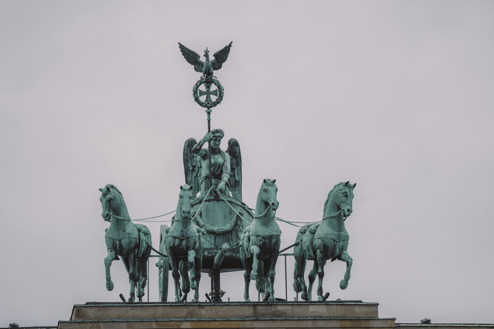

Das Brandenburger Tor wurde zwischen 1788 und 1791 errichtet, auf Geheiß von König Friedrich Wilhelm II. von Preußen. Architekt Carl Gotthard Langhans ließ sich von der antiken griechischen Architektur inspirieren. Mit seinen 12 dorischen Säulen und fünf Durchgängen war es ein imposanter Ausdruck königlicher Macht.
2. Anlass & Hintergrundgeschichte
Ursprünglich sollte das Tor ein Friedenssymbol sein und die Stadt Berlin schmücken. Die berühmte Quadriga, die 1793 hinzugefügt wurde, zeigt die Siegesgöttin auf einem von vier Pferden gezogenen Wagen. Sie symbolisiert Triumph, Frieden und Macht.

Die Quadriga ist nicht nur Kunstwerk, sondern auch ein Symbol für den Sieg des Friedens.
3. Historische Events & Berliner Mauer
Während des Kalten Krieges war das Brandenburger Tor direkt an der Grenze zwischen Ost- und West-Berlin und somit ein Symbol der Teilung. Mit dem Bau der Berliner Mauer 1961 war es für die Öffentlichkeit unzugänglich. Am 9. November 1989 wurde das Tor beim Mauerfall zum globalen Symbol der deutschen Wiedervereinigung.
4. Bedeutung & Symbolik
Das Brandenburger Tor steht für Freiheit, Einheit und Frieden. Während es ursprünglich Macht und Herrschaft repräsentierte, symbolisiert es heute Demokratie und Zusammenhalt. Es erinnert an die Opfer von Krieg und Teilung und steht gleichzeitig für Hoffnung und Freiheit.
Erstellt von Mustafa Ünalan, Armando Pali und Alpha Bah